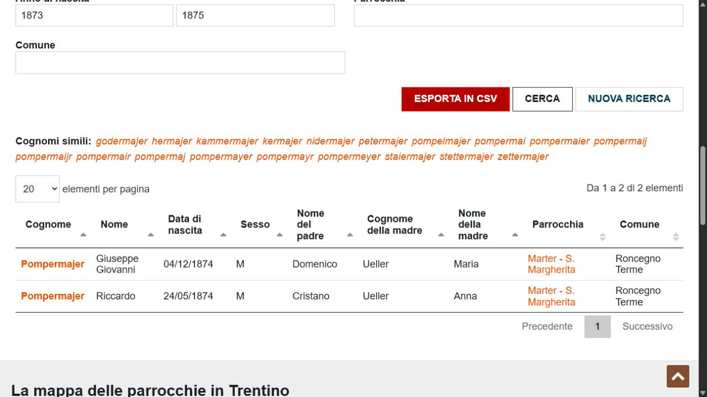
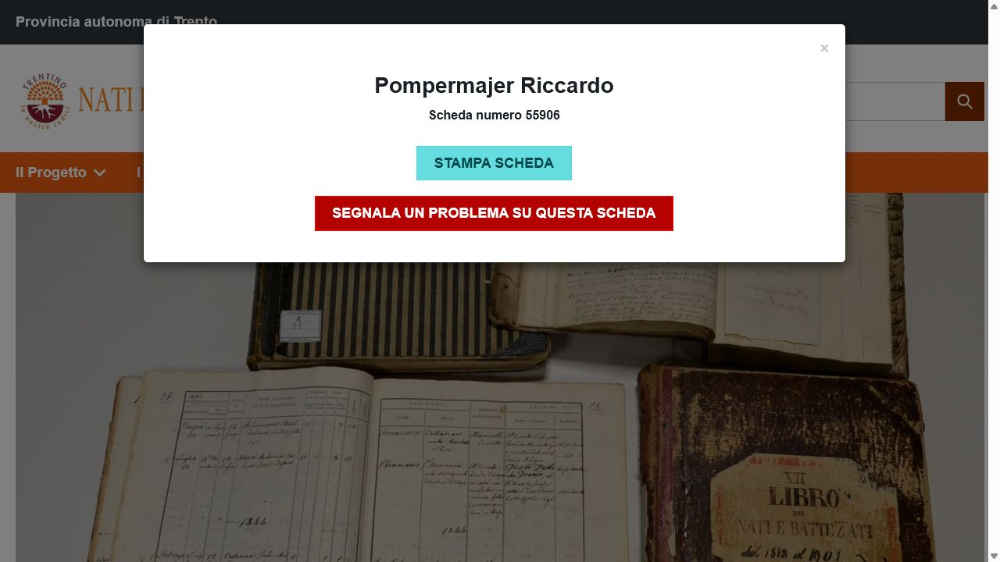
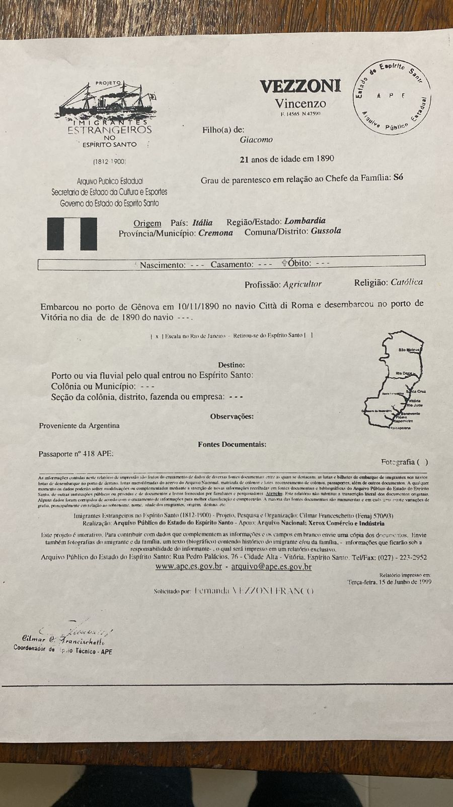
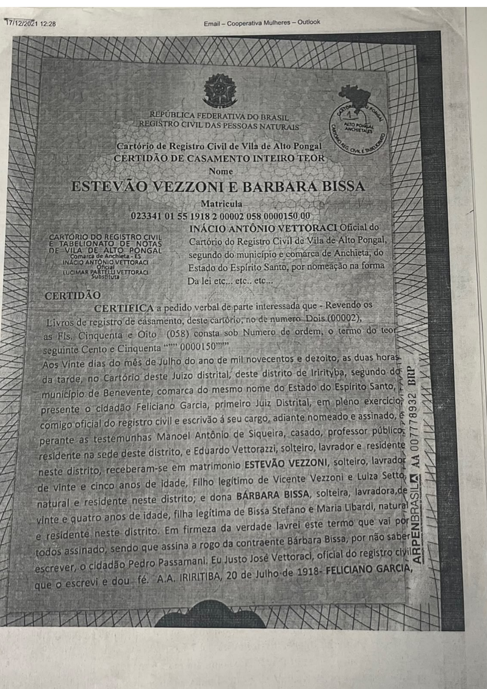
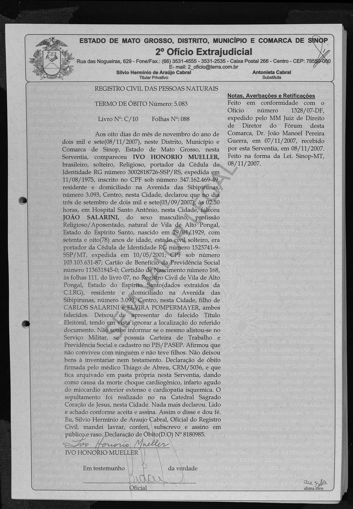
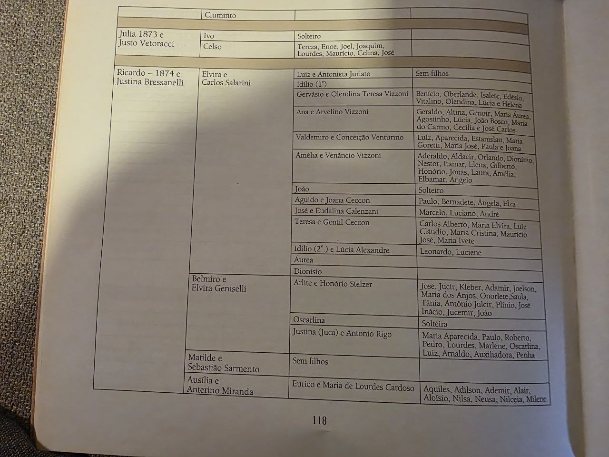

Ricardo Pompermayer + Justina Bressanelli
São seus trisavós paternos neste ramo. A evidência mais forte até agora vem pelo nascimento de José Salarini: o índice civil lista Elvira como filha de Ricardo + Justina.
Memoria genealogica em construcao
Uma pagina mobile-first para acompanhar as duas linhas da arvore paterna. A linha Salarini/Pompermayer ganhou um painel proprio: Carlos + Elvira ja estao sustentados por registros de Gervasio, Jose, Joao e Edylio, e a pagina 118 virou checklist dos filhos ainda sem certidao.
As duas linhas paternas, da Italia ate voce, em um so diagrama. Role para baixo para ver os detalhes e as evidencias de cada elo.
A linha da avo (Vezzoni/Bissa) so entrou na pesquisa em 2026-07-03 e ja alcancou o mesmo nivel de confianca da linha do avo em varios elos. Bissa/Libardi (bisavos maternos de Olendina) ainda nao tem origem italiana confirmada e por isso nao aparecem neste resumo; veja a secao "Linha da avo" abaixo.
Linha Salarini em foco
Esta é a leitura rápida de quem é pai de quem. A linha passa por Ricardo + Justina, chega em Carlos + Elvira, desce para Gervásio, depois Benício, e termina em você.
São seus trisavós paternos neste ramo. A evidência mais forte até agora vem pelo nascimento de José Salarini: o índice civil lista Elvira como filha de Ricardo + Justina.
São seus bisavós paternos pelo ramo Salarini/Pompermayer. Já aparecem sustentados por Gervásio, José, João e Edylio/Idílio; a página 118 abriu o checklist dos demais filhos.
São seus avós paternos. O fichário civil confirma Gervásio como filho de Carlos + Elvira e confirma Benício como filho de Gervásio + Olendina.
É seu pai e o ponto onde as duas linhas paternas se encontram: Salarini/Pompermayer pelo lado de Gervásio e Vezzoni/Bissa pelo lado de Olendina.
Você está aqui. Para ler a página: Carlos + Elvira são seus bisavós; os outros filhos deles são seus tios-avós paternos; Ricardo + Justina são seus trisavós.
Gervásio é seu avô paterno. Os demais filhos do casal são seus tios-avós paternos e ajudam a provar o casal por registros independentes.
Do avo paterno Gervasio Salarini ate os Pompermayer/Hueller em Marter/Roncegno, na Italia.
O Nati in Trentino sustenta o grupo familiar com cinco nascimentos Pompermajer entre 1866 e 1874 em Roncegno/Marter. Ainda precisamos localizar o casamento e conferir a variacao Anna/Giovanna nos assentos originais.
Ricardo aparece como Pompermajer Riccardo, nascido em 24/05/1874, paroquia Marter - S. Margherita, Roncegno Terme.
Registro civil de nascimento do filho Jose Salarini (1935) lista Ricardo Pompermayer e Justina Bressanelli como pais de Elvira, resolvendo a lacuna. Uma pagina familiar fotografada agora amplia o roteiro dos filhos do casal, incluindo Joao, Aguido, Teresa, Valdemiro, Amelia, Aurea e Dionisio.
A ligacao com Carlos Salarini e Elvira Pompermayer e sustentada por certidao de casamento de Gervasio e certidao de nascimento de Benicio.
Certidao de nascimento confirma Benicio como filho de Gervasio Salarini e Olendina, fechando a parte brasileira mais segura da linha.
Esta linha ficou fora do loop de pesquisa ate 2026-07-03. Comeca em Gussola, provincia de Cremona, na Lombardia (Italia) - uma regiao diferente do Trentino da linha Pompermayer - e chega a avo paterna, Olendina Thereza Vezzoni.
Pais de Vincenzo Vezzoni segundo fonte secundaria de genealogia, cruzada com a data de obito de Stefano na certidao brasileira. O registro oficial de imigracao confirma o pai como "Giacomo". Falta registro primario italiano.
Registro de Entrada de Imigrante do Projeto Imigrantes/APEES confirma Vincenzo, natural de Gussola/Cremona/Lombardia, embarcado sozinho em Genova em 10/11/1890 no navio "Città di Roma", desembarcado em Vitoria-ES em 1890.
Certidao de casamento inteiro teor confirma o casamento em 20/07/1918, em Iriritiba/Anchieta-ES, com retificacao judicial de 2018 que corrige os nomes para Stefano Vezzoni e Vincenzo Vezzoni + Luigia Orsola Cetto.
Certidao de nascimento confirma Olendina como filha de Stefano e Barbara, e avo paterna do autor da pesquisa. Segue na linha principal ate Gervasio Salarini e Benicio.
Imagens e arquivos auxiliares devem funcionar como prova visual rapida. O ideal, quando existir, e salvar a imagem/documento original da fonte, e usar print apenas como apoio.

IT-001 · Nati in Trentino · 2026-07-03
O resultado mostra nome, data, filiacao, paroquia e comuna: Pompermajer Riccardo, 24/05/1874, filho de Cristano e Ueller Anna, Marter - S. Margherita, Roncegno Terme.

Scheda 55906
O modal reforca a mesma leitura da tabela. Proximo passo: conseguir a imagem do livro paroquial por FamilySearch com login ou por consulta/solicitacao ao Archivio Diocesano Tridentino.
Fichario3.pdf
As certidoes descritas no arquivo principal sustentam Carlos + Elvira -> Gervasio -> Benicio. Esta parte e tratada como confirmada na pesquisa atual.
IT-002 · Nati in Trentino
Foram estruturadas as schede de Carlo Luigi, Giovanni Cristano, Maria Celeste, Giulia Metilde e Riccardo entre 1866 e 1874. A variacao Anna/Giovanna ainda precisa ser conferida nos assentos originais.
IT-003 · Scheda 324706
O indice lista Pompermajer Cristano Francesco, nascido em 04/04/1823, filho de Cristano e Corn Cattarina, em Fierozzo S. Francesco.

VZ-002 · Projeto Imigrantes APEES · 2026-07-03
Documento arquivistico primario: Vincenzo, filho de Giacomo, natural de Gussola/Cremona/Lombardia, embarcou sozinho em Genova em 10/11/1890 no navio "Città di Roma" e desembarcou em Vitoria-ES em 1890.

VZ-001 · Cartorio de Vila de Alto Pongal · 2026-07-03
Certidao inteiro teor confirma o casamento em 20/07/1918, em Iriritiba/Anchieta-ES, com filiacao de ambos e averbacao de retificacao judicial de 2018 para os nomes italianos corretos.

BR-003 · FamilySearch · 2026-07-03
Certidao completa e legivel (sem restricao) mostra Joao Salarini, religioso, nascido em 1929 em Vila de Alto Pongal-ES e falecido em 2007 em Sinop-MT, filho de Carlos Salarini e Elvira Pompermayer. Cita a certidao de nascimento original (numero 168, folha 111, livro 07) do cartorio de Alto Pongal.

BR-007 · Livro/fotos da familia · 2026-07-03
A foto local mostra Ricardo (1874) + Justina Bressanelli levando a Elvira + Carlos Salarini e lista filhos/ramais como Luiz, Idilio, Gervasio, Ana, Valdemiro, Amelia, Joao, Aguido, Jose, Teresa, Aurea e Dionisio. E fonte familiar secundaria, usada como roteiro para buscar certidoes primarias.
BR-008 · FamilySearch · resultado negativo util
No FamilySearch, a consulta por pai Carlos Salarini + mae Elvira Pompermayer retornou apenas Joao Salarini. Buscas por Aguido/Jose com local e data tambem falharam, inclusive para Jose, cujo ARK ja conhecemos. O proximo caminho e navegar o livro civil ou pedir certidao ao cartorio.
BR-009 · busca web + FamilySearch · 2026-07-03
Fonte pública secundária repete Aguido Salarini nascido em 21/12/1932 em Iriritiba/Anchieta. Teste logado no FamilySearch com essa data e local retornou 0 resultados; busca ampla por Aguido Salarini trouxe 1.198 resultados sem Aguido visível no topo. A data agora guia o livro civil, mas não entra como fato confirmado.
A pagina separa o que ja esta confirmado, o que e pista forte e o que ainda precisa ser provado. Isso evita misturar memoria familiar com documento primario.
Confirmado
Base: certidao de nascimento de Benicio e cruzamentos civis ja descritos na memoria.
Confirmado
Base: certidao de casamento de Gervasio e certidao de nascimento de Benicio.
Pista forte
Base: indice Nati in Trentino, scheda 55906, reforcada pelo conjunto de filhos Pompermajer em IT-002. Falta copiar o assento paroquial original.
Pista forte
Base: indice Nati in Trentino, scheda 324706, em Fierozzo S. Francesco, 04/04/1823. Falta a imagem do assento.
Confirmado
Base: indice do FamilySearch para o registro civil de nascimento de Jose Salarini (1935, Iriritiba-ES), que lista Ricardo Pompermayer e Justina Bressanelli como pais de Elvira. Imagem do documento ainda restrita.
Pendente
Deve ser buscado em registros civis e paroquiais do Espirito Santo, especialmente Alfredo Chaves, Rio Novo, Benevente/Anchieta e Matilde.
Regra do loop
O arquivo deve registrar a fonte, a confianca, o proximo passo e os lugares ja pesquisados para evitar buscas repetidas.
Confirmado
Base: certidao de casamento inteiro teor de 20/07/1918, com averbacao de retificacao judicial de 2018.
Confirmado
Base: Registro de Entrada de Imigrante do Projeto Imigrantes/APEES. Natural de Gussola/Cremona/Lombardia, imigrou sozinho em 1890.
Pista forte
Base: fonte secundaria de genealogia, cruzada com a data de obito de Stefano; o registro APEES confirma so o primeiro nome do pai, "Giacomo". Falta registro primario italiano.
As duas linhas paternas avancaram bastante em 2026-07-03. Na linha Vezzoni/Bissa (avo paterna), casamento e imigracao foram confirmados por certidao e registro oficial. Na linha Pompermayer (avo paterno), um registro civil brasileiro confirmou que Elvira Pompermayer era filha de Ricardo Pompermayer e Justina Bressanelli - o antigo gargalo genealogico da pesquisa. O proximo gargalo agora e conseguir a imagem completa dos documentos (nascimento de Riccardo na Italia e de Jose Salarini no Brasil), hoje restritas mesmo com login.
O loop de pesquisa deve priorizar documentos que aumentem o grau de confianca, sempre registrando fonte, link, data da consulta e evidencia visual ou arquivo original.
{kind=link}